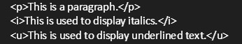

OBJECTIVES
1. Distinguish the basic terminologies of internet
2. Analyze the different website types and its purposes
3. Analyze the importance of types of web sites
4. Analyze web development life cycle and uses of the Internet and World Wide Web
Internet
- A worldwide collection of computer networks that links millions of computers used by business, the government, educational institutions, organizations, and individuals using modems, phone lines, television cables, satellite links, and other communications devices and media.

Network
- A group of two or more computers that are connected to share resources and information.
Internet Service Provider (ISP)
- A company that has a permanent connection to the Internet backbone. ISPs utilize high- or medium-speed data lines to allow individuals and companies to connect to the backbone for access to the Internet.
World Wide Web (WWW)
Many people use the terms Internet and World Wide Web interchangeably, but they are not the same thing.
The Internet
- Definition: The Internet is the infrastructure that connects computers globally, enabling them to share information.
- Functions: It supports various communication methods such as:
- Evolution: Early computers connected via direct calls, but today, networks are everywhere, making communication seamless.
The World Wide Web
- Definition:The Web is one of the most popular uses of the Internet.
It allows users to access interconnected information stored on web servers through browsers.
- Think of the Internet as the roads and the World Wide Web as the buildings (websites) alongside those roads.
What Makes Up the Web?
a. Web Servers (Skyscrapers)
- Web Servers are specialized computers connected to the Internet 24/7.
- They store websites' information and make it accessible to users.
- Web Hosts: Companies that own these servers and rent space to individuals or businesses wanting to start a website.
b. Websites (Rooms in the Skyscrapers)
- A website is like renting a room in a skyscraper. It contains information (text, images, videos) organized for visitors to access.
- Anyone can create a website with the right tools and skills, even from their personal computer.
3. Web Adresses and Browsers
- A website’s address (e.g., www.example.com) acts like a real-world address, guiding you to its location on the Web.
- Without domain names, navigating the Web would be impossible.
b. Browsers as Translators
- Web browsers (e.g., Chrome, Firefox) interpret the code (HTML, CSS, JavaScript) on websites and present it as user-friendly text, images, and videos.
- Example: Browsers turn complicated code into the pages you see when you browse social media or news sites.
4. The Importance of Hyperlinks
The Web's structure mirrors how the human brain works, making it intuitive to use.
Before the Web
- Information was consumed linearly, like reading a book from start to finish.
The Hyperlink Revolution
- Hyperlinks are connections within or between web pages.
- They allow users to jump directly to related information, mirroring how our thoughts naturally connect.
Example: Clicking a link in an article to read more about a related topic.
Tim Berners-Lee's Vision
- Tim Berners-Lee, the inventor of the Web, designed it to resemble the brain’s interconnected thought patterns.

- Hyperlinks are the backbone of the Web, creating a non-linear, dynamic experience.
Who Owns the Web?
No one "owns" the Web. Instead, it’s a collaborative space accessible to everyone.
You may pay an Internet Service Provider (ISP) for access.
You might rent space from a web hosting company or buy a domain name from a registrar.
- These companies provide services, but the Web itself belongs to everyone.
Web Page
- The linked documents, or pages of information on the Web.
Web Site
- A related collection of Web pages that is created and maintained by an individual, company, educational institution, or other organization.
Web Servers
- Web pages are stored on a Web server, or host, which is a computer that stores and sends (serves) requested Web pages and other files.
- Any computer that has Web server software installed and is connected to the Internet can act as a Web server.
- Publishing is copying Web pages and other files to a Web server. Once a Web page is published, anyone who has access to the Internet can view it, regardless of where the Web server is located.
Different Types of Networks
a. Internet
- What it is: The Internet is the most common medium for accessing the Web.
- Usage: Publicly accessible websites (e.g., social media, news sites, online stores)
- Purpose: Companies use intranets for internal communication and sharing sensitive data.
- Key Features: hosted on the Internet.
- Example: Visiting Instagram or YouTube from your device.
b. Intranet
- Definition: An intranet is a private network accessible only to members of an organization.
- Purpose: Companies use intranets for internal communication and sharing sensitive data.
Not connected to the public Internet.
Only authorized users (e.g., employees) within the organization can access the intranet.
- Example: A company’s internal HR portal for payroll, schedules, or announcements.
c. Extranet
- Definition: An extranet is a private network that provides limited access to external parties (e.g., clients, partners).
- Purpose: It balances privacy with controlled external access.
Combines elements of both intranets and the Internet.
External users may access specific parts of the network after authentication.
- Example: A supplier portal where vendors can log in to track orders or submit invoices.
Web Browsers
- Also called a browser, is a program that interprets and displays Web pages and enables you to view and interact with a Web page. Examples:
Microsoft Internet Explorer
- To locate a Web page using a browser, you type its URL in the browser’s Address or Location bar.
- Uniform Resource Locator or URL is the address of a document or other file accessible on the Internet.
Website Development Life Cycle
1. Web Site Planning
- Involves identifying the goals or purpose of the Web site
1. What is the purpose of the Web site
2. Who will use this Web site
3. Who owns and authors the information on the Web site
2. Web Site Analysis
- You make decisions about the Web site content and functionality
- Identify the tasks that users need to perform
1. What information is useful to the user
3. Web Site Design and Development
- Some key considerations in Web site design are how to organize Web page content, selecting the appropriate Web site structure, determining how to use multimedia, addressing accessibility issues, and designing pages for an international audience
1. What type of Web site layout is appropriate
2. What forms of multimedia is helpful to the user
Web Site Testing
- A Website should be tested at various stages of the Web design and development processes
- The testing process should be comprehensive and include a review of Web page content, functionality, and usability Is the Web site content correct
1. Is the Web site content correct
2. Does the Website functions correctly
3. Are users able to find the information they need
4. Is the navigation easy to use?
Web Site Implementation and Maintenance
- Once Web site testing is complete and any required changes have been made, the Web site can be implemented
- Implementation involves the actual publishing of the Web pages to a Web server
1. What type of Web site layout is appropriate
2. What forms of multimedia is helpful to the user
INTRODUCTION TO HTML
OBJECTIVES
Distinguish the components of a web page and the advantages and disadvantages of using HTML applications
Distinguish the types of tags
Create a web page using heading, paragraph, and formatting tags
HTML
- The term HTML is an acronym for Hypertext Markup Language.
- It is a markup language used for creating Web pages.
- A markup language then is a set of interpretation to text that describes how it is to be structured, laid out or formatted.
Tags
- Tags are basic units or building blocks of an HTML file or code.
- Web pages are designed and HTML codes are made up of these tags – they control how the HTML does its structuring, laying out and formatting.
Structure of a Tag
- Tags are enclosed in angle brackets < and >.
Container and Empty Tags
There are two types of tags namely:
1. Container Tags – have the start and end tags together

This is used to display italics.
This is used to display underlined text.
This is an underlined text and it is italic
Head Tags
- HTML files are divided into two parts: the head and the body.
- 1. Head part is enclosed in (head)(/head). It does not appear in the body of the Web page but contain information is placed.
The (title) (/title) tag inside the head tag is used to denote the title of the Web page and display the title of the Web page on the title bar.
- Contents in the body part are enclosed in (body) (/body). Everything appears on your Web page may it be texts, images, videos, and others should then be put on the body.
HTML Basic Tags
Heading
- Headings are container tags which format text using pre-defined values for size and color.
- There are 6 heading tags and they are:
- Extra lines are placed after headings when displayed on a Web browser. Headings will do well as titles and headers.
Paragraph
- (p) (/p)is used for writing paragraphs
- You can align a paragraph by using the paragraph tag pair
Left
Right
Center
Justify
Line Breaks
- Web browser ignores white spaces and pressing Enter key does not actually create a new line on the chunk of text on your Web page as seen on the code.
- The (br) tag creates a line break or new line.
Horizontal Rule
- The horizontal rule allows you to underline headlines or add a borderline.
- You can add a line by using the horizontal rule tag (hr).
- The horizontal rule tag places a horizontal rule or line that extends up to the Web browser’s width.
Preserve Formatting
- Sometimes, you want your text to follow the exact format of how it is written in the HTML document. In these cases, you can use the preformatted tag
This is pre.
- Any text between the opening (pre) tag and the closing (/pre) tag will preserve the formatting of the source document.
Comments
-
Aside from white spaces, there are other things your Web browser ignores, these are comments.
- Comments can be used to be used to put significant statements and/or remarks that you do not want to be displayed.
- The comment tag is a container tag that uses (!-- as a starting tag and --) as an end tag.
HTML Attributes
- An attribute is used to define the characteristics of an HTML element and is placed inside the element's opening tag. All attributes are made up of two parts: a name and a value:
- The name is the property you want to set.
- The value is what you want the value of the property to be set and always put within quotations.
- The paragraph element in the example carries an attribute whose name is align, which you can use to indicate the alignment of paragraphs on the page.
- The paragraph element in the example carries an attribute whose name is align, which you can use to indicate the alignment of paragraphs on the page.
Core Attributes
- The four core attributes that can be used on the majority of HTML elements (although not all) are:
- The id attribute of an HTML tag can be used to uniquely identify any element within an HTML page. There are two primary reasons that you might want to use an id attribute on an element:
- If an element carries an id attribute as a unique identifier, it is possible to identify just that element and its content.
- If you have two elements of the same name within a Web page (or style sheet), you can use the id attribute to distinguish between elements that have the same name.
- The title attribute gives a suggested title for the element. They syntax for the title attribute is similar as explained for id attribute: The behavior of this attribute will depend upon the element that carries it, although it is often displayed as a tooltip when cursor comes over the element or while the element is loading.

- The class attribute is used to associate an element with a style sheet, and specifies the class of element. You will learn more about the use of the class attribute when you will learn Cascading Style Sheet (CSS).
- The style attribute allows you to specify Cascading Style Sheet (CSS) rules within the element.

Generic Attributes
Formatting Texts
Displays the texts with increased size
Displays the texts with deacreased size
Font Tag
- It is used to alter the typeface, size and color of text.
Attributes
- Size – controls the size of font
- Value can be numbers 1 to 7
- Face – indicates the typeface used in the text
- Arial, Impact, Algerian are examples of typeface
- Color- indicates the color of the text
- Values can be assigned name or hexadecimal value of the color
CLEMENTE, CODY WAYNE L. | © 2025